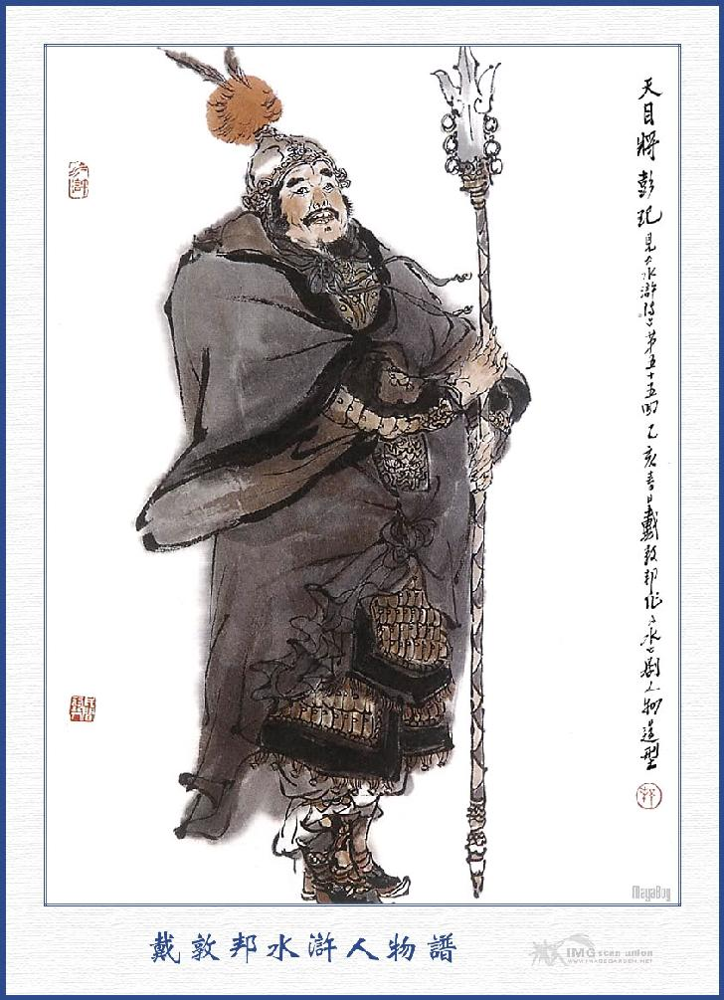
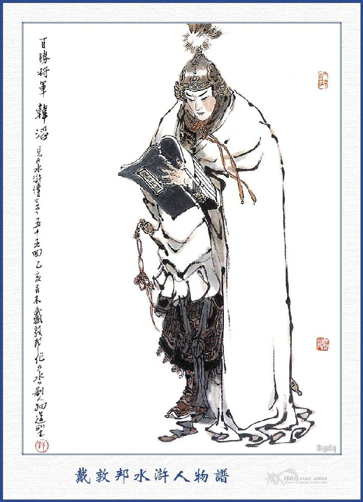
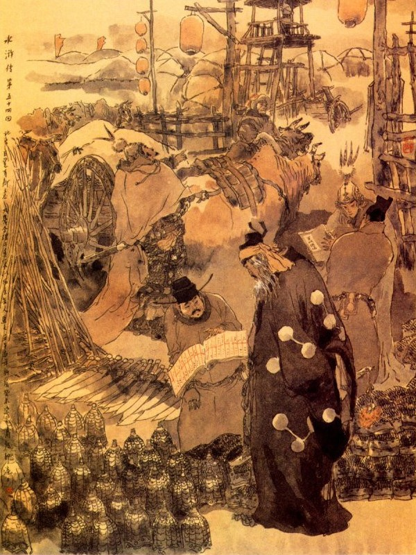
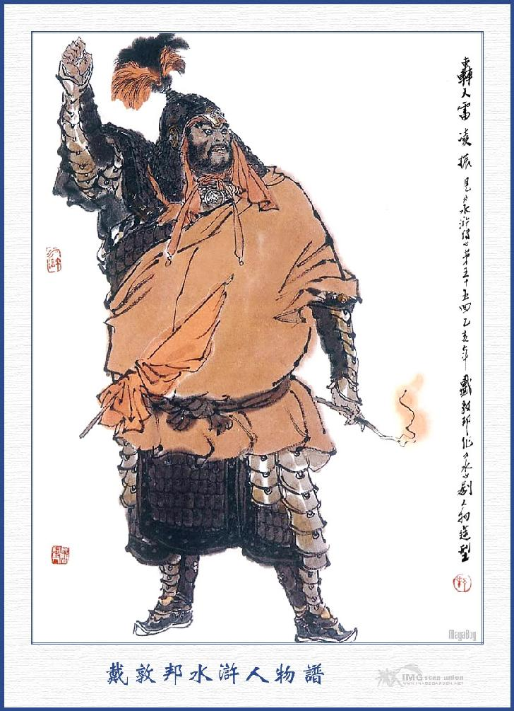
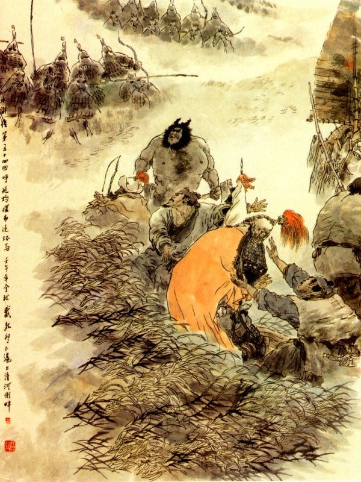

Bấy giờ Cao Thái Úy hỏi Hô Diên Chước, định cử ai làm tướng Tiên Phong?
Hô Diên Chước bẩm rằng:
- Chúng tôi xin cử một người làm chánh Tiên Phong là họ Hàn tên Thao, nguyên người quán Đông Kinh, hiện làm Đoàn Luyện Sứ ở Trần Châu, vốn là tay võ cử xuất thân, khiến một thanh gươm trường rất giỏi, người ta thường gọi là Bách Thắng Tướng Quân; có một người Phó Tiên Phong tên Bành Dĩ, con cháu của tướng ở đất Đông Kinh, hiện làm Đoàn Luyện Sứ ở Dĩnh Châu, khiến khẩu đao hai lưỡi hai mũi, võ nghệ hơn người, ai ai cũng gọi là Thiên Mục Tướng Quân.
Cao Thái Úy nghe nói cả mừng mà rằng:
- Nếu được hai tướng đó đứng Tiên Phong thì làm gì mà không dẹp yên được giặc?
Nói đoạn liền cho thảo hai bức công văn, Ủy Viện Khu Mật, sai người đến Trần Châu và Dĩnh Châu lập tức, triệu Hàn Thao và Bành Dĩ về kinh thính dụng.
Cách dặm bảy hôm, hai tướng về đến Soái Phủ; liền vào bái yết Cao Thái Úy, ngày hôm sau Cao Thái Úy đen các hàng quân ra đến giáo trường để diễn võ.
Khi diễn võ xong Cao Thái Úy hỏi các chư tướng rằng:
- Hiện nay ba đạo quân có được bao nhiêu?
Hô Diên Chước đáp rằng:
- Trong ba đạo có năm nghìn quân mã và một vạn quân bộ.
Cao Thái Úy nói:
- Nếu vậy các tướng phải lập tức trở về bản Châu, chọn lấy ba nghìn mã quân và năm nghìn bộ quân mà cùng nhau tiến đánh Lương Sơn mới được.
Hô Diên Chước nói:
- Binh mã ba đạo hiện đã luyện tập tinh thông, chủ Súy không cần lo đến, duy các đồ giáp trượng thì còn thiếu thốn nhiều, e khi khó lòng mà khởi binh ngay được.
- Nếu thế ta cho phép vào kho giáp trượng ở đây, chọn đủ các thứ để dùng cho quân sĩ, cốt sao nghiên bị chỉnh tề rồi khi khởi binh, ta sẽ cho người ra điểm lại.

BÀNH DĨ

HÀN THAO
Hô Diên Chước vâng lệnh, đem người vào kho giáp trượng, chọn được ba nghìn thiết giáp, năm nghìn áo giáp ngựa bằng da, hai nghìn gươm trường, một nghìn đao lớn, các thứ cung tên cùng năm trăm khẩu hoả bác thiết bác, xếp đặt trên xe, để mang về ứng dụng. Cao Thái Úy giao cho ba nghìn ngựa trận, thưởng kim ngân cho ba tướng và khao thưởng tam quân. Rồi Hô Diên Chước cùng Hàn Thao, Bành Dĩ làm giấy cam đoan với Cao Thái Úy mà từ biệt ra đi.
Khi về tới châu Nhữ Ninh, Hô Diên Chước sai Hàn Thao, Bành Dĩ, đem hết binh mã ở Trần Châu, Dĩnh Châu đến cùng hội họp. Trong nửa tháng trời, ba đạo quân tề tựu nghiêm chỉnh. Hô Diên Chước liền đem các đồ gươm giáo cung ngựa trao cho ba quân mà dự bị đợi ngày ra trận.
Bấy giờ Cao Thái Úy sai hai viên tướng trong điện Súy Phủ, ra điểm lại hẳn hoi rồi khao thưởng ba quân mà chia làm ba đạo tiến đánh. Hô Diên Chước đi đạo trung quân ở giữa, rồi Bành Dĩ thôi thúc đạo quân đi sau. Khi ra khỏi cửa thành, ba quân cờ mở trống gióng, uy thế ầm ầm như vỡ trời long đất mà cùng nhau keo đến Lương Sơn.
Bên kia Tiều Cái, Tống Giang nghe báo quan quân kéo đến, bèn tụ họp quân sư Ngô Dụng, Công Tôn Thắng, Sài Tiến, cùng các vị Đầu Lĩnh, để bàn định cơ cự địch.
Ngô Dụng nói:
- Hô Diên Chước là con cháu quan Khai Quốc Công Thần Hô Diên Tán, võ nghệ cao cường, khiến hai cây roi đồng rất giỏi, khó ai bén mảng đến gần. Vậy tất phải tay nào can trường giỏi giang mới được, trước hết lấy sức đối địch rồi sau dùng mẹo thi hành mới có thể bắt được.

Vừa nói dứt lời thì Hắc Toàn Phong Lý Quỳ ứng lên rằng:
- Tôi xin đi bắt thằng ấy mới được.
Tống Giang gạt đi mà rằng:
- Ngươi đi không được. việc này phải nhờ Tích Lịch Hoả Tần Minh đi đánh trận đầu; Báo Tử Đầu Lâm Xung, đi đánh trận thứ nhì; Tiểu Lý Quảng Hoa Vinh đánh trận thứ ba; Nhất Trượng Thanh Hổ Tam Nương, đánh trận thứ tư; Bệnh Úy Trì Tôn Lập, đánh trận thứ năm. Năm đội lần lượt đánh rồi ta sẽ dẫn mười anh em và đại đôi nhân mã mà áp sau. Đám hậu quân thì bên tả năm tướng là Chu Đồng, Lôi Hoành, Mục Hoằng, Hoàng Tín, Lã Phương; bên hữu năm tướng là Dương Hùng, Thạch Tú, Âu Bằng, Mã Lân, Quách Thịnh; đường thủy thì Lý Ứng, Trương Hoành, Trương Thuận và ba anh em họ Nguyễn đem thuyền ra tiếp ứng. Còn Lý Quỳ với Dương Lâm đem quân ra mai phục hai bên đường để đợi khi ứng viện.
Tống Giang cắt đặt chỉnh tề rồi tiền quân là Tần Minh dẫn quân mã xuống núi rồi tìm nơi nội rộng mà dàn thành thế trận. Bấy giờ đương dạo mùa đông, song khí trời ấm áp dễ chịu, Tần Minh đợi đến ngày hôm sau đã thấy Tiên Phong bên kia là Bách Thắng Tướng Quân Hàn Thao kéo đến.
Sáng hôm sau, hai bên ra đối trận. Ba hồi trống gióng vừa xong thì hai tướng cùng cởi ngựa xông ra cửa trận, cùng đứng dưới mặt cờ.
Hàn Thao hoành gươm trên ngựa mà quát mắng Tần Minh rằng:
- Binh trời đến đây, ngươi không xuống ngựa sớm liệu hàng trước đi, còn toan chống cự được sao ta nay quyết lấp phăng vũng nước, đập tan ngọn núi Lương Sơn, giết chết đồ phản tặc chúng bay mà đem nộp về triều đình, băm thây làm vạn mảnh mới nghe.
Tần Minh vốn là người nóng tính, không nói năng chi, liền vỗ ngựa múa Lang Nha Côn thẳng xông ra đánh. Hàn Thao cũng múa gươm cự địch với Tần Minh. Đôi bên đánh nhau được hơn hai mươi hiệp, Hàn Thao không sao địch nổi Tần Minh, chỉ toàn thừa cơ để chạy.
Vừa khi đó chủ tướng là Hô Diên Chước kéo đến, thấy Hàn Thao không đánh nổi Tần Minh, liền múa song chiên, phóng ngựa Tích Tuyết Ô Truy, xông ra để đánh giúp.
Tần Minh thấy vậy toan xong lại đánh thì đội quân thứ hai là Báo Tử Đầu Lâm Xung đã ra cứu ứng.
Lâm Xung bảo với Tần Minh rằng:
- Thống Chế hãy nghĩ một lát xem tôi đáng đủ ba trăm hiệp rồi sẽ hay.
Nói đoạn múa Bát Xà Mâu ra đánh Hô Diên Chước rồi Tần Minh lại dẫn quân quanh sườn núi lui vào. Đằng này Lâm Xung với Hô Diên Chước, đôi bên địch thủ với nhau, kẻ chiên người thương rối rít như hoa trước gió, đánh nhau hơn năm mươi hiệp, chưa phân thắng phụ ra sao?
Chợt đâu đội quân thứ ba là Tiểu Lý Quảng Hoa Vinh đã đến. Hoa Vinh đứng trước cửa trại kêu lên rằng:
- Lâm Tướng Quân hãy khoan tay, để tôi bắt sống hắn cho mà coi.
Lâm Xung nghe nói, liền quay ngựa chạy vào trốn mất, Hô Diên Chước thấy Lâm Xung võ nghệ cao cường thì cũng chạy về bản trận mà không dám đuổi. Lâm Xung bèn dẫn quân bản bộ mà đi quanh vào nẻo đường núi.
Bấy giờ Hoa Vinh vác thương ra trận thì thấy bên kia tướng hậu quân là Thiên Mục Tướng Bành Dĩ cũng vừa kéo đến.
Bành Dĩ hoành đao ngồi trên mình ngựa Ngũ Minh Thiên Hoàng Hoa, xông ra cửa trận quát mắng Hoa Vinh rằng:
- Đồ phản tặc kia có thấm vào đâu? Ngươi quyết đấu được thua với ta chăng?
Hoa Vinh cả giận không thèm trả lời, liền xông ngựa ra đánh luôn Bành Dĩ. Đôi bên đánh nhau được hai mươi hiệp thì Hô Diên Chước thấy Bành Dĩ hơi túng thế, bèn vỗ ngựa xông ra địch với Hoa Vinh.
Chợt đâu toán quân thứ tư kéo đến, Nhất Trượng Thanh Hổ Tam Nương gọi lên rằng:
- Hoa Tướng Quân hãy nghỉ tay, để tôi bắt tên ấy cho.
Hoa Vinh nghe nói, liền vỗ ngựa dẫn quân lui về sườn núi. Bên kia Bành Dĩ lại xông ra đánh nhau với Nhất Trượng Thanh.
Vừa được một lát thì toán quân thứ năm là Bệnh Úy Trì Tôn Lập kéo ra, Tôn Lập kìm ngựa trước trận, xem Nhất Trượng Thanh đối địch Bành Dĩ, đôi bên gươm đao loáng nhoáng, ngựa cuốn bụi trần, đầu xông sát khí đanh nhau hơn hai mươi hiệp thì Nhất Trượng Thanh quay ngựa chạy vào.
Bành Dĩ thấy vậy, gắn sức bình sinh xông vào đuổi đánh. Nhất Trượng Thanh đeo đao lên yên ngựa, sờ trong áo lấy ra tấm hồng gấm, trên mặt có hai mươi bốn lưỡi câu vàng, chờ khi Bành Dĩ đuổi sát đến nơi, liền quay mình nhắm trúng Bành Dĩ quăng ra một cái rồi giật Bành Dĩ quay xuống ngựa.
Tôn Lập thấy thế, quát quân sĩ bắt trói Bành Dĩ đem về. Hô Diên Chước cả giận, liền vỗ ngựa xông ra đánh cứu. Nhất Trượng Thanh cũng vỗ ngựa xông ra để địch Hô Diên Chước. Hô Diên Chước tức giận Nhất Trượng Thanh mong sao nuốt sống được thì mới cam tâm.
Hai bên đánh nhau hơn hai mươi hiệp, Hô Diên Chước sốt ruột lừa miếng phá đĩnh, lừa cho Nhất Trượng Thanh chém sấn đôi đao vào gần trước bụng rồi tay hữu chàng giơ roi nhằm vào Nhất Trương Thanh đánh xuống, dè đâu Nhất Trượng Thanh nhanh mắt trông thấy, liền giơ đao bên phải lên đỡ làm cho đầu roi vừa đánh vào lưỡi đao đánh keng một tiếng, bắn loè lửa ra rồi Nhất Trượng Thanh quay ngựa chạy vào bản trận.
Hô Diên Chước thấy vậy vội vàng sấn ngựa đuổi theo. Bên này Bệnh Úy Trì Tôn Lập xông ra đón đánh rồi thấy toán hậu quân của Tống Giang cũng vừa kéo đến ở đàng sau.
Tống Giang dẫn mười vị Tướng Quân, dàn thành trận thế, để tiếp ứng đằng sau, còn Nhất Trượng Thanh lại dẫn quân mã quay vào sườn núi. Tống Giang thấy Nhất Trượng Thanh bắt sống được Bành Dĩ thì trong lòng lấy làm mừng vô hạn.
Đằng này Tôn Lập đeo gươm lên vai rút đôi cương chùy dóng trúc, ra đánh nhau với Hô Diên Chước, đôi bên cùng múa song chùy, thế lực tất là hùng dũng. Một bên Tôn Lập đội mũ sắt đôi sừng giao nhau quấn khăn lụa hồng ở trán, mình mặc áo bà ba đen, trăm hoa điển vẽ, vai khoác giáp vàng cưỡi ngựa Ô Truy, khiến đôi cương chiên dóng trúc mắt hổ, trông vẽ ăn đứt Uất Trì Cung. Một bên Hô Diên Chước, đầu đội mũ sắt sừng thẳng lên trời, quấn khăn vàng ở trán, mình mặc áo đen, đốm vẽ thất tinh khoác áo khai giáp, cưỡi con ngựa Tích Tuyết Ô Truy khiến đôi cương chiên Thủy Bát Mã Lăng, tay tả nặng mười cân, tay hữu nặng mười ba cân, rõ ra dòng dõi quan Hô Diên Tán. Hai bên đánh nhau trước trận, kẻ tiến người lui, kẻ quanh người lại, trước sau tới ba mươi hiệp, chưa phân thắng thua được ra sao.
Bấy giờ Hàn Thao ở trong đám quân quan, nghe nói bị bắt mất Bành Dĩ liền thôi thúc hết cả binh mã đội hậu, xông vào đánh trận Tống Giang, Tống Giang thấy vậy, vội thúc mười vị Đầu Lĩnh dẫn quân xông sang đánh trước. Đoạn rồi bốn đạo ở đằng sau cũng chia làm hai đường mà cùng nhau tiến đánh.
Khi đó trong trận Hô Diên Chước, ngựa đứng liên hoàn, đều mặc bố giáp, chỉ hở bốn cẳng ra ngoài, người mặc áo ngai giáp, chỉ để hai mắt nom ra cung tên gươm giáo không thể sao đánh cho trúng được. Còn bên trận Tống Giang cũng có giáp trụ chỉnh tề, song đò dùng thường mỏng không sao chịu nổi cung tên của trận bên kia bắn lại, Tống Giang biết thế không đánh phá nổi, đành phải gõ chiên thu quân lui về. Bên kia Hô Diên Chước cũng lui quân hơn hai mươi dặm hạ trại.
Tống Giang kéo quân về hạ trại bên Tây núi rồi gọi tả hữu đem Bành Dĩ ra trước trướng Trung Quân. Khi binh sĩ giải Bành Dĩ tới nơi, Tống Giang vội quát lui tả hữu rồi thân hành cởi trói cho Bành Dĩ, dắt lên mời ngồi trong trướng, đoạn rồi Tống Giang cúi lạy Bành Dĩ một cách rất trang trọng.
Bành Dĩ vội đáp lễ mà rằng:
- Chúng tôi bị bắt đến đây, lẽ ra phải chết, cớ sao Tướng Quân lại còn đãi cho như thế?
Tống Giang nói:
- Lũ chúng tôi hết chốn nương thân, phải nhờ nơi Thủy Bạc tạm lánh ít lâu. Ngày nay triều đình sai Tướng Quân đến đánh, lẽ ra đến trước Quan Nhân mà cúi đầu chịu tội mới phải, song e khi tính mạng không toàn, mới phải cùng các ngài mà cả gan chống cự. Nay như thế thực là mạo phạm uy trời, xin ngài ta tội ấy cho.
Bành Dĩ nói:
- Tôi vẫn nghe tiếng Tướng Quân có lòng trọng nghĩa khinh tài, phù nguy cứu khổ, ai ngờ đâu ngày nay quả nhiên biết được, như vậy thực hân hạnh vô cùng. Nếu ngài có lòng dung nạp tôi thì sẽ hết lòng ra sức để báo đáp ơn to nghĩa lớn, chẳng hay ngài nghĩ sao?
Tống Giang nghe nói cả mừng, sai người đưa Bành Dĩ lên chào Tiều Cái Thiên Vương, lưu ở sơn trại rồi nhất diện khao đãi tam quân, cùng các vị Đầu Lĩnh bàn định việc quân.
Bên kia Hô Diên Chước thu quân đóng trại rồi cùng với Hàn Thao bàn việc đánh phá Lương Sơn.
Hàn Thao nói:
- Ngày nay ra trận, bên giặc đã tiến quân ra đánh, sao lại vội vàng lui quân về ngay, vậy ngày mai đem tận số quân mã lên trước, tất là toàn thắng không sai.
Hô Diên Chước nói:
- Việc đó ta cũng dự định như thế, vậy ngày mai nên làm ngay mới được.
Nói đoạn liền hạ lệnh cho ba nghìn quân mã dự làm trăm đội, cứ ba mươi con kết làm một liên, lấy hoàn (vòng) sắt khoá với nhau, hễ gặp quân giặc xa dùng cung tên, gần dùng gươm giáo, đều phải hết sức xông vào để đánh. Còn năm nghìn quân bộ đi sau để tiếp ứng.
Hô Diên Chước lại dặn Hàn Thao rằng:
- Sáng mai bất tất khiêu chiến làm chi ta cùng Tướng Quân cứ áp trận đằng sau, hễ thấy quân giặc ra đánh thì cứ chia làm ba mặt xông vào mới được.
Bàn định đã xong, sáng hôm sau đều sắp sửa chỉnh tề ra trận.
Đằng này Tống Giang chia binh mã làm năm đội tiến trước, còn hậu quân chỉ có mười tướng đi kềm và hai toán phục binh, nấp ở hai đường tả hữu. Bấy giờ năm đội quân đi trước thì có Tần Minh đứng giữa, Lâm Xung, Nhất Trượng Thanh bên tả, Hoa Vinh, Tôn Lập ở bên hữu rồi Tống Giang dẫn mười tướng kéo quân ra đằng sau, người ngựa chập chùng, không khác chi rừng quân núi giáo vậy.
Khi dàn trận chỉnh tề Tần Minh liền ra trận thách đánh với Hô Diên Chước, bên trận Hô Diên Chước có một nghìn bộ binh dàn ở trước mặt, chỉ khua trống reo hò mà không ai ra đánh với Tần Minh.
Tống Giang đứng sau thấy vậy, lấy làm nghi hoặc, bèn truyền lệnh cho hậu quân tạm lui rồi phóng ngựa lên chỗ Hoa Vinh, để nom sang trận bên kia. Chợt đâu bên trận bên kia có tiếng súng Liên Châu, một nghìn quân bộ ở trước trận, chia ra hai bên rồi có ba đạo quân mã liên hoàn xông ra hăng hái. Hai bên mã quân toàn thị tên bắn ra như mưa, còn khoảng giữa thì gươm giáo sáng choang một lượt.
Tống Giang thấy vậy cả kinh, vội thúc quân sĩ lấy cung tên bắn ra để cự địch. Bên kia ba nghìn quân mã cứ phăm phăm nhất tề để cự đến. Năm đạo quân trước trận. Tống Giang thấy cả sợ, rối loạn cả lên. Đội quân ở phía sau cũng hoảng kinh chạy trốn, không sao thu giữ lại được. Tống Giang vội vàng quay ngựa lui lại rồi mười tên tướng kèm giữ hai bên mà chạy.
Bấy giờ sau lưng đã có một đội quân Mã Liên Hoàn đuổi đến. May có hai đạo phục binh của Lý Quỳ, Dương Lâm đổ ra cự địch, đánh cứu Tống Giang chạy thẳng về Bến Nước. Đoạn rồi Lý Tuấn, Trương Hoành, Trương Thuận, cùng ba anh em họ Nguyễn chở thuyền ra tiếp ứng, Tống Giang vội vàng xuống thuyền sai chia các ngã cứu các tướng xuống thuyền tất cả.
Trên kia đội quân Mã Liên Hoàn đuổi đến Bến Nước, bắn tên rào rào xuống các thuyền, may các thuyền đều có các lá chắn che thân, nên không thiệt hại chút nào. Tống Giang thôi thúc đuổi thuyền đến Áp Chủy rồi kéo lên bộ đóng quân ở đó. Khi điểm lại binh mã thiệt mất quá nữa, duy các Đầu Lĩnh vẫn còn chu toàn được cả.
Được một lát thấy Thạch Dũng, Thời Thiên, Tôn Tân, Cố Đại Tẩu chạy trốn về sơn trại mà nói rằng:
- Chúng tôi bị đám bộ quân sát đến, phá hết cửa nhà, nếu không có thuyền ứng cứu thì khó lòng mà sống sót lên đây được.
Tống Giang nghe nói, lấy lời an ủi mọi người rồi thân hành xem xét tất cả các tướng sĩ ra trận. Trong đó có sáu người bị tên là Lâm Xung, Lôi Hoành, Lý Quỳ, Tôn Tân Hoàn Tín, còn đám tiểu lâu la bị thương không biết tới đâu mà kể. Tiều Cái thấy vậy, liền cùng với Ngô Dụng, Công Tôn Thắng tới nơi thăm hỏi. Tống Giang ra âu sầu lo nghĩ, không biết lập kế ra sao?
Ngô Dụng khuyên Tống Giang rằng:
- Thắng bại là việc của nhà binh, Ca Ca bất tất phải lo phiền quá đổi. rồi đây ta sẽ nghĩ cách phá ngựa Liên Hoàn.
Tiều Cái bèn truyền lệnh thủy quân, đóng yên Thủy Trại, đêm ngày canh phòng cho cẩn thận, đề phòng địch tràn qua và mời Tống Giang lên núi để yên nghĩ.
Tống Giang không chịu lên núi, liền hạ trại ở bến Áp Thủy rồi cho các tướng bị thương lên núi để dưỡng bệnh.
Sa trường muôn dặm cát bay,
Anh hùng thua được xưa nay chuyện thường,
Ba quân bền giữ gan vàng,
Nước non có hội phong quan ngại gì?
Nói về Hô Diên Chước thu quân đắc thắng trở về trong trại, tháo ngựa Liên Hoàn, thưởng công các tướng, tính tất cả giết chết quân rất nhiều, bắt sống được năm trăm người và hơn ba trăm ngựa chiến. Hô Diên Chước liền cho người về báo tiệp ở kinh sư rồi nhất diện khao thưởng quân ở trại.
Bấy giờ Cao Thái Úy ở kinh sư nghe tin Hô Diên Chước đánh được giặc Lương Sơn Bạc, sai người về báo tiệp thì hớn hở vui mừng đến ngày hôm sau vào tâu cho Thiên Tử biết.
Thiên Tử nghe tin cả mừng liền lấy mười bình rượu ngự, một áo cẩm bào và mười vạn quan tiền, phái một viên Sứ Quan đem ra cho Hô Diên Chước và khao thưởng ba quân. Khi Sứ Giả tới nơi Hô Diên Chước cùng Hàn Thao ra ngoài hai mươi dặm đón tiếp vào trong trại, lạy chịu ơn vua, đặt tiệc đãi Sứ Giả rồi sai Hàn Thao chia tiền thưởng quân và đem năm trăm người mới bắt đem giam trong trại, để đợi khi được đầu đảng sẽ giải kinh sư.
Quan Sứ thân hỏi Bành Đoàn Luyện, Hô Diên Chước liền đáp rằng:
- Bữa trước mới kéo quân đến đây, vì ham bắt Tống Giang vào gần đất giặc, nên bị gian đồ bắt mất, nhưng ngày nay chắc là quân giặc không dám thò ra nữa. Vậy tôi định phân binh để đánh kỳ cho phá hết sơn trại, lấp phẳng thủy nhai, bắt cả gian tặc mà phá tan sào huyệt mới nghe. Song còn hiềm một nổi bốn mặt toàn thị hồ nước, không có đường lên, vậy duy còn có cách dùng súng hoả bác mà bắn đánh thì thể nào cũng có thể phá được. Trước đây tôi nghe ở kinh sư có một người tên là Oanh Thiên Lôi Lăng Chấn, chế súng Hoả Bạc có thể bắn xa tới mười bốn mười lăm dặm, đạn đá đến đâu, đất lỡ trời long, núi tan đá vỡ đến đó. Vả chăng người đó võ nghệ tinh thông, cung tên thạo giỏi, nếu được Thiên Sứ về kinh, nói Quan Thái Úy cho người đó ra đây thì thế nào cũng có thể phá tan quân giặc ngay.
Thiên Sứ nghe nói vâng lời rồi sáng hôm sau bái biệt trở về kinh sư, Thiên Sứ vào chào Cao Thái Úy, đem lời của Hô Diên Chước thuật lại cho Cao Thái Úy nghe. Cao Thái Úy cả mừng, lập tức cho đòi quan phó sứ kho Giáp Trượng là Lăng Chấn đến.

LĂNG CHẤN
Nguyên Lăng Chấn, người ở Lăng Yên là một tay võ nghệ cao cường làm nghề chế súng rất giỏi ở triều nhà Tống, nên vẫn gọi là Oanh Thiên Lôi xưa nay. Bấy giờ Oanh Thiên Lôi đến bái kiến Cao Thái Úy, Thái Úy cấp văn bằng trao cho làm chức Thống Lĩnh Hành Quân, truyền lệnh sắp sửa yên mã khí giới để ra đi lập tức.
Lăng Chấn vâng lệnh ra về sửa soạn các đồ dùng, chế thuốc làm súng cùng các thứ giá súng đạn, xếp cả lên xe và sắp đủ cung đao mã giáp, dẫn ba bốn mươi tên quân hoá đi ra địa phận Lương Sơn.
Khi ra tới trại, Lăng Chấn chào chủ Tướng là Hô Diên Chước và Tiên Phong là Hàn Thao rồi thăm dò các nơi xung yếu ở sơn trại và đặt ba thứ súng để đánh. Ba thứ súng đó một là Phong Hoả Bác, hai là Kim Luân Bác, ba là Tử Mẩu Bác, đều sai đặt giá súng ở bên Bến Nước, để phòng bị sẵn sàng ở đó.
Khi đó Tống Giang ở trong tiểu trại trên bến Áp Chủy, đương cùng với quân sư Ngô Học Cứu, để bàn cách phá quan quân. Bỗng thấy người vào báo, nay có một tay giỏi nghề súng đạn, tên là Oanh Thiên Lôi Lăng Chấn, ở đông kinh mới đến trại quân, hiện đã dựng các giá súng ở Bến Nước, để sắp sửa đánh vào sơn trại nay mai.
Ngô Dụng nghe báo, bảo với Tống Giang rằng:
- Sơn trại đây, bốn mặt toàn thị là hồ nước, thành Uyển Tử cách nước lại càng xa, dẫu có Phi Thiên Hoả Bác cũng khó lòng mà đánh vào ngay được. Nay hãy tạm bỏ tiểu trại này mà đóng cả ở trên núi, xem họ đánh chác ra sao rồi ta sẽ liệu.
Tống Giang nghe nói, liền bỏ tiểu trại ở bên Áp Chủy mà kéo về tất cả ở trên sơn trại. Tiều Cái, Công Tôn Thắng đón tiếp vào Tụ Nghĩa Sảnh mà hỏi rằng:
- Nay quân giặc đã dùng thứ súng như vậy thì ta dùng cách nào để đối địch cho lại?
Vừa hỏi được một câu thì bỗng thấy có ba tiếng súng nổ luôn, đánh vào Thủy Trại ngoài bến Áp Chủy. Tống Giang thấy vậy, trong lòng bối rối lo âu, cùng các vị Đầu Lĩnh đều thất sắc ngây người không biết làm sao cho được.
Ngô Học Cứu nói bàn rằng:
- Bây giờ nếu có một người dụ được Lăng Chấn vào gần Bến Nước mà bắt được hắn thì mới có thể bàn đánh phá quân giặc được.
Tiều Cái nói:
- Nếu vậy thì ta cho Lý Tuấn, Trương Hoành, Trương Thuận, ba anh em họ Nguyễn, đem thuyền ra Bến Nước cứ thế này. mà làm. Trên bờ thì Chu Đồng, Lôi Hoành thì cứ theo cách thế này mà tiếp ứng thì may ra có thể thành công được.
Sáu vị Đầu Lĩnh coi thủy trại đều vâng lời rồi Lý Tuấn cùng Trương Hoành dẫn bốn năm mươi tên thủy thủ rất thạo, chèo hai cái thuyền, theo đám lau lách đi trước, Trương Thuận cùng ba anh em họ Nguyễn dong hơn bốn mươi chiếc thuyền nhỏ, tiếp ứng theo sau.
Khi Lý Tuấn, Trương Hoành ra đến ngoài bến, liền nhảy lên bờ đến chỗ giá súng của Lăng Chấn mà reo hò toan kéo đổ. Quân sĩ thấy vậy liền vào báo với Lăng Chấn. Lăng Chấn nghe báo, vội lấy hai khẩu súng phong hoả rồi cắp dao lên ngựa, dẫn hơn nghìn quân hăm hở đuổi theo.
Lý Tuấn, Trương Thuận thấy vậy liền dẫn người chạy thẳng. Lăng Chấn hất hả chạy đuổi theo đến bên gần Bến Nước, thấy có một dãy hơn bốn mươi chiếc thuyền nhỏ và có hơn trăm quân thủy ở đó.
Bấy giờ Lý Tuấn, Trương Thuận nhảy xuống cả thuyền, cố ý trùng trình không đẩy thuyền ra vội. Khi trông thấy nhân mã của Lăng Chấn tới nơi thì kêu gọi ầm ĩ rồi nhảy xuống cả nước một lượt.
Lăng Chấn thấy vậy, liền đến cướp cả thuyền, Chu Đồng, Lôi Hoành đứng đối ngạn bên kia liền đánh trống reo hò ầm cả lên.
Lăng Chấn cướp được dãy thuyền, bèn sai quân kéo cả xuống thuyền chèo chở quay vào để đánh. Khi đến giữa dòng nước, chợt thấy Chu Đồng, Lôi Hoành ở trên bờ đánh một hồi chuông, liền ở dưới nước có bốn năm mươi tên thủy quân, nhoi lên nhổ hất tất cả lái thuyền làm cho nước chảy vào thuyền như suối vậy. Đoạn rồi đám thủy quân thừa thế mà đánh lật đổ cả thuyền, các quân sĩ trong thuyền đều bị lăn xuống nước cả.
Lăng Chấn thấy vậy toan quay thuyền trở lại thì bỗng thấy thuyền mình cũng mất cả bánh lái, nước rĩ vào thuyền như suối chảy rồi hai bên có hai tên Đầu Lĩnh nhoi lên đánh đổ lật thuyền cho Lăng Chấn ngã lăn xuống nước. Bấy giờ Nguyễn Tiểu Nhị chực sẵn dưới thuyền, vớ được Lăng Chấn, liền ôm choàng lấy mà kéo lên trên bờ. Lên đến bờ, có người tiếp tay mà trói Lăng Chấn lại, giải lên trên núi. Đám quân lính ở dưới này bắt được hai trăm người còn sống. Còn thì chết đuối quá nửa và có mấy người chết hụt, chạy về báo cho Hô Diên Chước biết.

Hô Diên Chước nghe báo, lập tức dẫn quân ra đuổi. Khi tới nơi, đã thấy các thuyền trở về bến Áp Chủy, người không thấy một ai mà cung tên bắn cũng không sao tới. Hô Diên Chước lấy làm căm tức vô cùng, song không làm thế nào được, đành phải nín hơi nuốt giận mà dẫn quân mà lui về. Bên kia bọn Đầu Lĩnh bắt được Oanh Thiên Lôi Lăng Chấn, giải về trên núi liền cho người báo với Tống Giang. Tống Giang dẫn hết thảy các Đầu Lĩnh trong Trại, đi xuống cửa quan thứ nhì để đón tiếp.
Khi trông thấy Lăng Chấn, Tống Giang thân hành cởi trói ra rồi giận mắng chúng rằng:
- Tao bảo các ngươi đón mời Thống Lĩnh lên núi tử tế, sao các ngươi xử vô lễ như thế?
Lăng Chấn nghe nói lấy làm cảm tạ vô cùng, Tống Giang liền nâng chén rượu tiếp phong rồi bắt tay mời lên trên núi. Được một lát, lên tới Đại Trại, Lăng Chấn trông thấy Bành Dĩ cũng dự ở đó, trong lòng rất lấy làm phân vân, không biết nói sao cho được?
Bành Dĩ khuyên Lăng Chấn rằng:
- Hai vị Đầu Lĩnh Tiều, Tống thay Trời làm Đạo, chiêu nạp hào kiệt, mong trừ những sự bất bình, để giúp cho nhà cho nước. vậy chúng ta đến đây, chỉ nên theo mệnh là hơn.
Tống Giang cũng lấy lời uyển chuyển mà dỗ dành Lăng Chấn vào đảng. Lăng Chấn đáp rằng:
- Tiểu đệ ở đây hầu các ngài cũng được, không lấy gì làm ngại. Duy còn mẹ già cùng vợ con ở cả kinh sư, nếu lỡ ra ai biết tất là nguy hiểm đến tính mạng, vậy biết làm sao cho tiện được?
Tống Giang nói:
- Cái đó Thống Lĩnh bất tất phải quan tâm, mấy hôm nữa, tôi xin cho người đón về đây lập tức.
Lăng Chấn tạ rằng:
- Nếu được Đầu Lĩnh chu toàn như thế thì chúng tôi dẫu chết cũng cam tâm.
Tiều Cái liền đặt tiệc ăn mừng và thưởng cho quân sĩ. Ngày hôm sau các vị Đầu Lĩnh cùng bàn kế để phá ngựa Liên Hoàn.
Chợt thấy Kim Báo Tử Thang Long đứng lên nói:
- Tiểu Đệ nghĩ được một kế này, tất phải nhờ đến một thứ khí giới kia và một người Ca Ca tôi mới có thể phá trận Liên Hoàn được.
Ngô Dụng đón lấy nói:
- Nếu được như vậy thì còn gì hơn nữa? Người ấy là ai? Dùng thứ quân khí gì? Xin hiền đệ cho được biết.
Thang Long vâng lời, liền chắp tay đến trước để kể tên người đó cho các vị Đầu Lĩnh nghe.
Mới hay:
Đã nên khẳng khái ra đời,
Làm cho động đất kinh trời mới nghe
Tuồng gì bọ nước xăm xoe,
Mũ cao áo rộng toan đè nén nhau.
Giống người ai kém ai đâu,
Quyết đem máu đỏ mà lau gươm thù.
Có công tất cũng nên trò,
Cái gương công lý ngàn thu vẫn còn.
Lời bàn của Thánh Thán
Hồi này ba đoạn văn tự một đoạn tả Tống Giang phóng quân xa; Một đoạn Hô Diên Chước liên hoàn quân; đều là những văn rất tinh thần biến động. Một đoạn tả bắt Lăng Chấn, coi như bắt trẻ con, sở dĩ như thế là trước khi tác giả chưa hạ bút, trong vốn có một tứ lạ tả Liên Hoàn Mã, chẳng tiện đột nhiên mà tả ra, cho nên trên chữ Liên Hoàn, điên đảo sinh ra hai chữ Phóng xa quân, trước đoạn văn (Liên Hoàn) lại có một đoạn văn Phóng xa, khiến độc giả choáng mắt vì lạ, song bỗng đâu một biến, biến ra thứ trận như bài sơn đảo hải.
Nay thử xem phóng xa coi khinh, liên hoàn thấy trọng, đem khinh dẫn trọng là một lạ vậy. Phóng xa liên hoàn một bầy, lấy từng đội dẫn cả bầy là hai lạ vậy; Phóng xa các người tự chiến, liên hoàn nhất tề tiến ra là ba lạ vậy; Phóng xa chợt tan chợt hợp, liên hoàn liền khóa với nhau, đem ly dẫn hợp là bốn lạ vậy; Phóng xa tiền quân thua, chuyển làm hậu quân, liên hoàn không trước không sau, thẳng xông ra vậy, đem tiền chuyển hậu dẫn ra không hậu không tiền là năm lạ vậy; Phóng xa có tiến, có thoái liên hoàn chỉ tiến không thoái, đem tiến thoái dẫn ra tiến thôi là sáu lạ vậy; Phóng xa tả nhân, liên hoàn tả mã, lấy nhân dẫn mã là bảy lạ vậy. Xem thế một đám hoa đống gấm văn chương, chỉ do một trận Liên Hoàn tả ra rồi sau đến đoạn thứ hai tả đến bản đề, song lại chăng vội thu kết ngay nữa; lại từ chỗ ngựa nảy ra súng làm một chót đuôi, song lại sợ hai phen chiến trận nguy nan mà tả đến dụng súng, khiến văn tự thụt đi không nổi lên, mớt đem bút rồi, mực đương, tả bắt Lăng Chấn như đồ trẻ con vậy. Hỡi ôi! Chỉ vì một đoạn hoá ra ba đoạn, đáng bảo là trong khoảng một đoạn rất khéo biến ra mà hai đoạn trước sau cũng chỉ là một đoạn giữa nối liền làm một mà mỗi một đoạn một biến rất khéo, nào ai muốn nổi lên tranh cái tiếng tài tử với tác giả kia, ta thấy rõ ràng là không thể sánh kịp.
Trước sau hai đoạn đều rất khéo biến ra kia, như đoạn trước tả phóng xa quân, khi mỗi một đội muốn đi, phải có trước một đội tiếp hậu, một tiếp một chờ, ví như lông cánh vịt vậy. Thi Nại Am lại bỗng đâu tính đến khi đội thứ năm muốn đánh, phải tiến xa mười viên tướng áp hầu, như lộ ngấn tích, bèn khiến hai chữ "Phóng xa" cả thua, mới đem đội thứ năm tiếp chiến bèn tả Tống Giang đem mười viên tướng, cho khỏi cái lỗi đứt nối vậy. Song lại tính đến một thiên chương pháp, trong đội thứ năm lại biến khác ra, chỗ đó vẫn lộ ngấn tích, đánh đến chuột chạy cùng đường, ở chỗ đội thứ tư khi tiếp chiến, tả đến đội thứ năm đã đến sớm làm phảng thấn, thực khổ tâm thay cho một thợ lành nghề văn tự.
Lại như trước một đoạn tả đội thứ năm Phóng xa quân, một đội thắng một đội, vốn thế vậy, khi đến đội thứ tư, bỗng đâu trên trận bay ra ba khẩu đao, đã mà một biến, biến ra hai khẩu đao hai chiếc roi biến ra hai chiếc roi, càng biến càng lạ, càng lạ càng kinh, càng kinh càng vui, thực văn chương xem thấy thú!
Một đoạn sau Tiều Cái truyền lệnh, hãy mời Tống Giang về núi, Tống Giang cố ý chẳng chịu, đọc đến cho rằng, ý bảo diệt kẻ kia chỉ trong một sớm một chiều, biết đâu chính vì mưu để thu súng Lăng Chấn, đó là bút pháp tuyệt kỳ, chẳng phải bút mực tả ra mà được?
Lại như cần tả đến dùng súng, lại tả ra phép bắn súng ở chỗ chẳng gần cũng chẳng xa, nay xem chỗ Lăng Chấn tới, chỉ là ca ngợi, đặt giá súng để bắn, thấy uy thế của chúng làm cho Tống Giang phải bỏ trại thu quân lẩn về núi, thực là bút pháp tuyệt kỳ, chẳng phải bút tục tả ra mà được?
Tả tiếp luôn sự dùng súng, bắn ba chỗ, lại nói ra rằng, hai chỗ bắn khắp mặt nước, một chỗ bắn vào trong tiểu trại, tả hai chỗ bằng khắp mặt nước cho rõ thủy bạc rộng rãi, một chỗ bắn vào tiểu trại cho rõ sức súng rất xa mạnh!
Đến như sau là trước hồi này, lại có riêng bút khéo tài tình, như sắp tả Liên Hoàn Mã đã tả trước một ngự mã ban cho để dẫn ra; sắp tả áo giáp Từ Ninh, lại tả trước bao nhiêu giáp binh mã để dẫn ra, bao nhiêu ngựa liên hoàn, chỉ một ngựa vua ban làm điều động, đều chẳng phải bút pháp tầm thường mà tả nổi như thế!